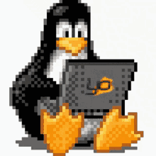

Wstaion
A project by Maicon Vieira. Visit maiconvieira.dev to see other projects and more about me.What's Wstaion?
Wstation: A personal CLI assistant designed to streamline software development workflows. Developed as a deep dive into C programming logic and a practical tool for everyday productivity.
Why C?
Inspired by Harvard’s CS50, I chose C to build Wstation. My goal was to move away from high-level abstractions and embrace the discipline of low-level programming, gaining full control over memory management and system resources.
Usage
Actual features
- Command Persistence: Save your frequent commands and paths in a local configuration file.
- Batch Execution: Run all your daily tools (VS Code, Browser, Docker, etc.) with a single command.
- Cross-Platform Ready: Conditional compilation for Windows and Unix-based systems (Linux/macOS).
- Clean Management: Easily add, list, or remove paths from your workspace.
Quick Start
compilation
To use the program, do you need compile
Linux

Requisites
- GCC
- MAKE
- GIT
Clone the repository on GitHub
git clone https://github.com/maiconjsv/wstaion.git
cd wstaion
Compile with make in the root directory
make
Or manually using
gcc main.c -o wstaion
To be able to run the state from anywhere in the terminal, move the binary to /usr/local/bin.
sudo mv wstaion /usr/local/bin/
Windows
To compile Wstaion in Windows, do you need MinGW-w64 compiler or use git bash to type input make(For the sake of your patience, I recommend git bash.)
Download the project
git clone https://github.com/maiconjsv/wstaion.git
cd wstaion/wstaion
When you compile the wstaion.exe, do you need move the executable to
C:\Users\YourUser\bin\wstaion.exe
- Add the folder to the user's PATH Press Win + R
- Type: sysdm.cpl
- Go to the Advanced tab
- Click on the environment variables
- Under User variables, select path
- Add: C:\Users\YourUser\bin
- Confirm everything with OK
⚠️ Use only User variables. Administrator permission is not required.
MacOS
Ha ha, no
If i need update to the last release?
Actually i don't have a install manager, so you will need:
git pull https://github.com/maiconjsv/wstaion.git
make clean
make
This will recompile and compile again with the last release.
Commands
Help
To get commands info:
wstaion help
Check version
wstaion -v
Or
wstaion --version
WorkStart
Add a program to start
You can map a program by typing its full root path
wstaion add path "/usr/bin/firefox"
Remove a program
To remove an added path, simply use the rm command.
wstaion rm path "/usr/bin/firefox"
Start the work environment:
Now, to start the programs, simply use the following command.
wstaion workstart
Workstart will start every program listed in add path, program by program.
Now, you dont need open every program when you start your job 🙂
Contribute
As you can see, Wstaion is still in its initial phase of development. My goal is to create a CLI tool that helps developers improve productivity and also supports beginner developers with future features that I plan to add.
Wstaion is an open source project and contributions are always welcome. If you'd like to help improve the project, follow the steps below:
To contribute:
Go in https://github.com/maiconjsv/wstaion
- Fork the repository on GitHub
- Clone your fork to your local machine
- Create a new branch for your changes
- Make your improvements or fixes
- Commit and push your changes
- Open a Pull Request
You can contribute by fixing bugs, improving documentation, suggesting new features, or helping with code improvements.